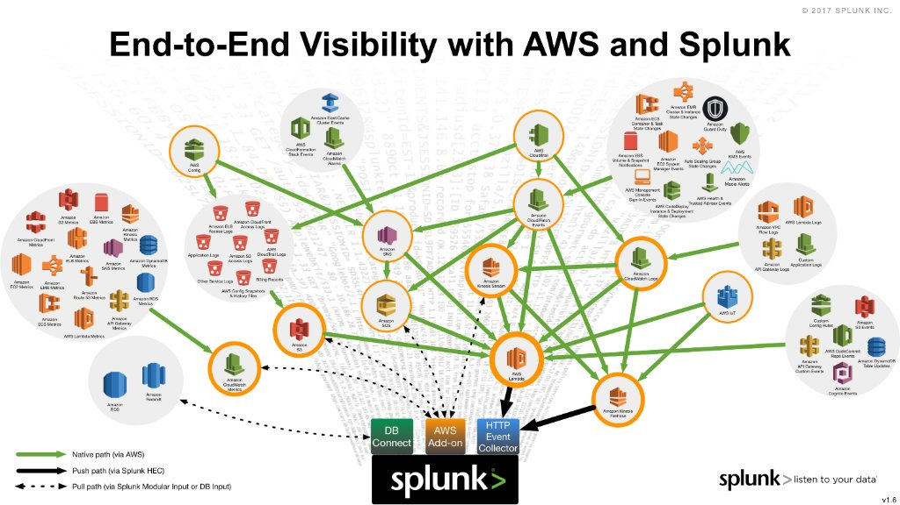
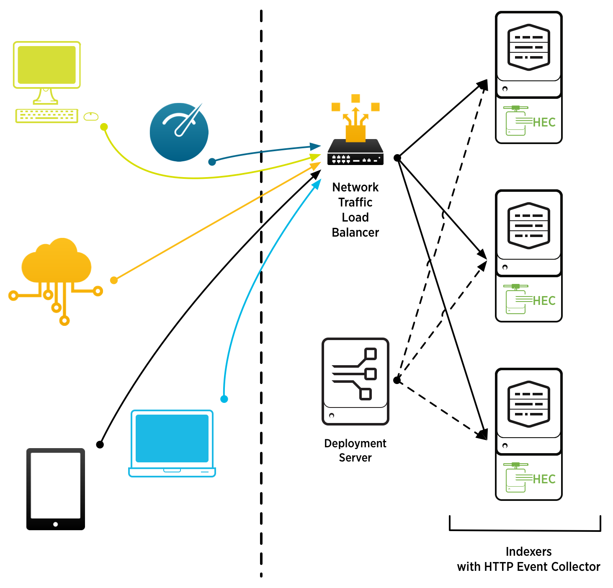

Welcome to my Project Page!
Here you will be able to see some of the projects that I have worked on during my time in school.

Being able to understand Splunk and how they have partnered with AWS to create cloudbase servers for our clients as well as use other AWS based apps to make our service stronger.

Understanding how Splunk is able to ingest any type of data and how in order for your data to reach the indexer we use a HTTP event collector or known as HEC.
Worked with an application called BackPac, I worked closely with the founders to help create a launch strategy and help manage their overall product.